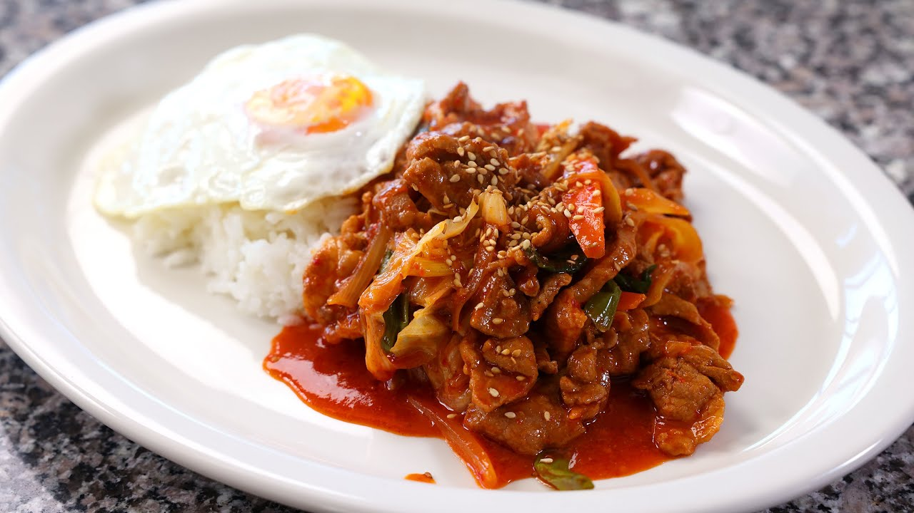
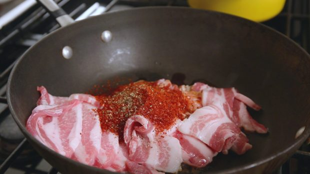

Spicy Pork

Delicious spicy pork
About Spicy Pork
What kind of side dish looks nice and special but is very simple to make? Hot soup is a good answer but something fatty will also be a good choice, as long as it’s very delicious.
Spicy-stir fried pork is the perfect dish that I was thinking of. Just follow the recipe and make a delicious, irresistible, spicy, shiny, stir-fried pork dish in 15 minutes! I posted the video and the recipe years ago on my website, and it’s also one of my cookbook recipes, but this updated version is slightly modified and improved.
This time I used pre-cut pork sold at a Korean grocery store, but you can also just get pork belly at your local butcher and cut it into think pieces about 1/8 inch thick. You could also replace pork belly with chicken breast, slightly frozen so you can slice it thinly and nicely.
Serves 3 to 4
Ingredients
- 1 pound pork belly, cut into bite size pieces (1/8 inch thick)
- ¼ cup hot pepper paste (gochujang)
- 1 tablespoon soy sauce
- 1 tablespoon sugar
- 2 tablespoons hot pepper flakes (gochu-garu)
- ¼ teaspoon ground black pepper
- 1 tablespoon toasted sesame oil
- 5 garlic cloves, minced
- 1 teaspoon ginger, minced
- 1 medium size onion, sliced
- 4 green onions, sliced
- 1 teaspoon toasted sesame seeds
- Heat up a large, thick skillet (or pan) over medium high heat.
- Add pork, hot pepper paste, soy sauce, sugar, hot pepper flakes, black pepper, and toasted sesame oil.
- Mix it well, stirring with a wooden spoon. Cook it for a few minutes until the pork is well mixed with the seasonings.

- Add garlic, ginger, onion, and green onions. Stir and cook for 12 to 15 minutes until the pork is fully cooked and juicy and a little crispy.
- Transfer to a serving plate and serve with rice, kimchi, lettuce, ssamjang, and more side dishes.
Back to home page